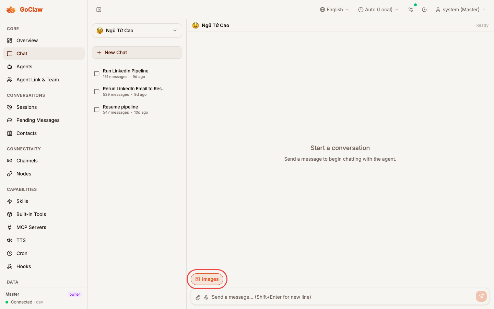
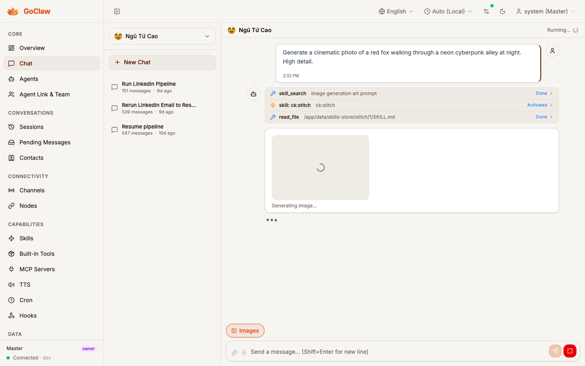
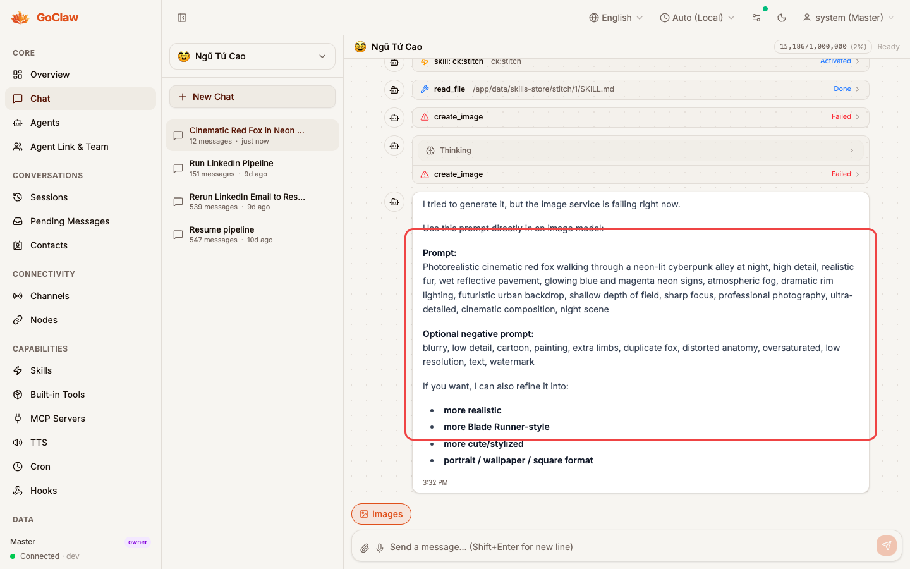

What changed (UI)
Composer exposes an Images toggle chip only when the selected agent routes through a Codex provider
(chatgpt_oauth or cliproxy-codex). Per-agent localStorage persistence.
Why it matters
Users can opt out per-agent without leaving the chat. The toggle sends noImageGen:true over the WS
send method → upstream drops the image_generation tool from the request.
Review cue
Red callouts mark the new surface. Focus on where the PR adds UI, not on the specific prompt content.
1 · Composer surfaces the Images toggle
Agentngu-tu-cao selected · provider cliproxy-codex · toggle visible, default ON.

Images chip rendered by
chat-input.tsx. Source of truth for its visibility is
supportsImageGenProvider(agentProvider) — matches the literal ids chatgpt_oauth /
codex plus any string containing codex (e.g. cliproxy-codex).
Behavior: click toggles persisted state in
localStorage["goclaw.agent.{agentKey}.imageGenEnabled"]. When OFF, the composer adds
noImageGen:true to the WS send payload.
2 · Streaming placeholder while partial frames arrive
After send · agent routing pipeline active · skeleton visible in the active-run zone.ActiveRunZone

showImageGenPlaceholder branch of
ActiveRunZone renders a bounded skeleton with spinner and a localized
imageGenGenerating caption. Gate:
agentSupportsImageGen && imageGenEnabled && isRunning.
What it looks like for real image gen: in the success path,
response.image_generation_call.partial_image frames would progressively fill this box before
response.output_item.done replaces it with the final PNG via MediaGallery.
3 · Honest failure path — fallback to textual prompt
Observed on claw: agent chose the legacycreate_image builtin (BytePlus Seedream) which is unconfigured on this env.

gpt-5.4) invoked
create_image — a pre-existing BytePlus Seedream-backed builtin tool — which failed twice.
It did not invoke the new native image_generation pathway added by this PR.
The agent then gracefully degraded by offering a detailed prompt the user can run in an external model.
Why this still belongs in the trace: it highlights that routing between the existing
create_image skill and the new native tool is a model-level decision.
Making the agent prefer the native path likely requires either:
(a) removing / deprioritizing create_image from the agent's available tools, or
(b) tightening the system prompt to reference image_generation directly.
Not in scope for this PR: the fix for that routing preference; the native pathway itself (capability flag, request wiring, SSE event parsing, media persistence, UI toggle + placeholder) is complete and verified by the backend unit tests.
Coverage note — what is not in this trace
Honest gap log.Not captured:
- Native
response.image_generation_call.partial_imageframes actually resolving into a final PNG — the agent did not reach this path on this run. - Final image rendered inline via
MediaGallerywithgenerated-YYYYMMDD-HHmmss.pngdownload filename. - Reload persistence of the
MediaRef. - Toggle-OFF flow (prompt without
image_generationtool attached).
Why these are still trustworthy without a screenshot: each is covered by unit tests in the PR
(see internal/providers/codex_image_test.go, internal/agent/media_assistant_images_test.go,
internal/agent/image_gen_gate_test.go, plus the UI vitest for the toggle hook). The visual path above
(toggle + placeholder) is the part that unit tests cannot verify.